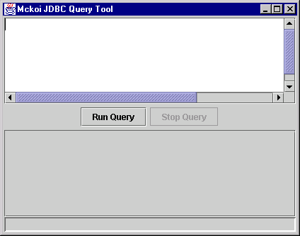

|
Home / Documentation / FAQ / Support / Download Mckoi SQL Database as a multi-user server |
The Mckoi database server is a multi-threaded multi-user TCP/IP application that will process SQL queries and dispatch query results to clients. To start the server (assuming you have created a database from 'Getting Started') use the following command;
java -jar mckoidb.jarIf the database configuration file is not in the current directory you can specify it on the command line with the
-confswitch. See the 'Getting Started' section for information on database configuration.If the database started correctly you should see something similar to;
Mckoi SQL Database ( 0.87 beta ) Copyright (C) 2000 Diehl and Associates, Inc. All rights reserved. Use: -h for help. McKoi SQL Database comes with ABSOLUTELY NO WARRANTY. This is free software, and you are welcome to redistribute it under certain conditions. See LICENSE.txt for details of the GPL License. JDBC Server on port: 9157. Boot time: 711ms.This means the database successfully booted and is now listening for connections on port 9157.
JDBCQueryTool is a simple utility program developed for Mckoi SQL Database. It can connect to a Mckoi database, run queries and display the results graphically. It uses JavaTM Swing/JFC for the user interface. To start JDBCQueryTool enter the following from the installation directory;
java -cp mckoidb.jar com.mckoi.tools.JDBCQueryTool \ -u "admin_user" -p "aupass00"This is assuming you set the admin username to '
admin_user' and password to 'aupass00'. Also, the database server must be running on localhost.If the database is running on a host other than localhost the
-urlswitch is used to tell JDBCQueryTool the host to log onto. For example, to connect to a database running on hostdb.myhost.org;java -cp mckoidb.jar com.mckoi.tools.JDBCQueryTool \ -url "jdbc:mckoi://db.myhost.org/" \ -u "admin_usr" -p "aupass00"When JDBCQueryTool successfully connects and authenticates the user with the server a screen should appear as follows;

SQL Queries can be entered into the text field at the top of the window. When the Run Query button is pressed the query is sent to the database server and after being processed the result is shown in a table.
For examples of using the JDBC Query Tool see the examples provided in 'Mckoi SQL Database as an embedded application'.
All access to the database server from a Java application / applet / servlet is via the Mckoi JDBC Driver. JDBC is the standard Java API for communicating with a database. The following code demonstrates how to connect to a Mckoi database from within a Java application.
import java.sql.*; public class ConnectToServerDemo { public static void main(String[] args) { // Register the Mckoi JDBC Driver try { Class.forName("com.mckoi.JDBCDriver").newInstance(); } catch (Exception e) { System.out.println( "Unable to register the JDBC Driver.\n" + "Make sure the JDBC driver is in the\n" + "classpath.\n" + System.exit(1); } // This URL specifies we are connecting with a database server // on localhost. String url = "jdbc:mckoi://localhost/"; // The username / password to connect under. String username = "admin_user"; String password = "aupass00"; // Make a connection with the database. Connection connection; try { connection = DriverManager.getConnection(url, username, password); } catch (SQLException e) { System.out.println( "Unable to make a connection to the database.\n" + "The reason: " + e.getMessage()); System.exit(1); return; } try { // .... Use 'connection' to talk to database .... // Close the connection when finished, connection.close(); } catch (SQLException e) { System.out.println( "An error occured\n" + "The SQLException message is: " + e.getMessage()); return; } } }There are further examples in the
/demodirectory of the software installation. While the demonstration programs use the Mckoi engine as an embedded database, all that changes from connecting to an embedded database and connecting to a remote server is the JDBC URL.
Last Updated: Mon Aug 16 00:27:18 PDT 2004
Mckoi SQL Database Copyright © 2000 - 2004 Diehl and Associates, Inc. All rights reserved.
|